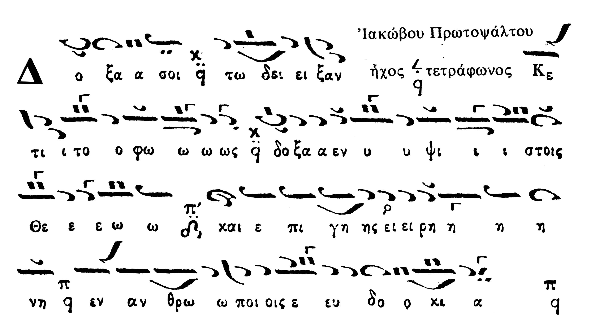
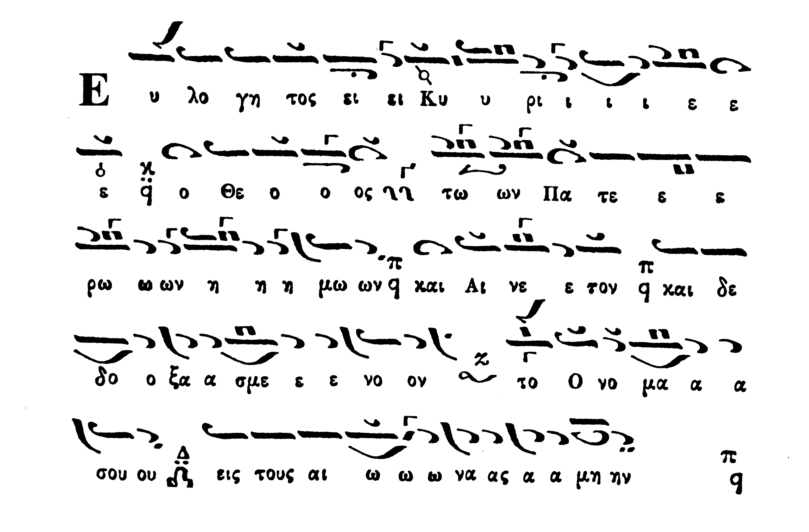
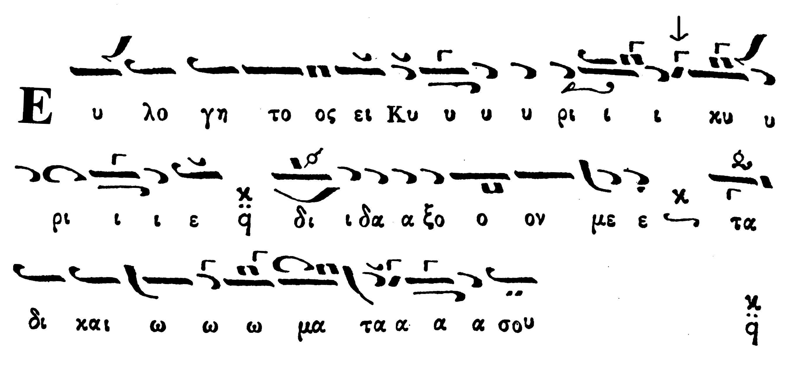
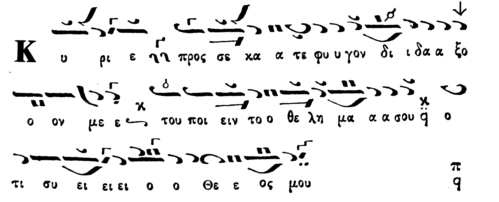
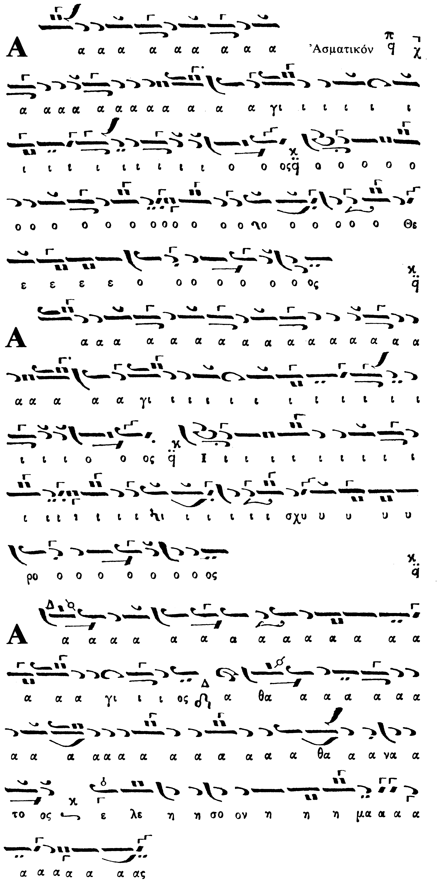

Δοξολογία Ιακώβου Ήχος Πρώτος Τετράφωνος / Doxology
of Iakovos Protopsaltis in First Mode Tetraphonos
Μία από τις πιό γνωστές Δοξολογίες / One of the most well known
slow Doxologies
Εισαγωγή / Introduction
This doxology is considered to be one of the best ever written. Below, we present
recordings of it and a comparative analysis of performances by noted psaltai. The score shown is from
the classical 4-volume Pandekte by Stephanos and Ioannis (Constantinople, 1851).And
another version [
zip] (scanned by Shota Gugushvili).
Ηχογραφήσεις / Recordings
Λεωνίδας Αστέρης/Στυλιανός Φλοίκος, Εορτή Αγ. Βαρθολομαίου 2005, Πάνσεπτος Πατριαρχικός Ναός, από τη ραδιοφωνική εκπομπή "Ψαλτικής Απανθίσματα" του Βαγγέλη Λιναρδάκη και Εμμανουήλ Σουργιαδάκη. / Leonidas Asteris and Stylianos Floikos live at the Patriarchal Church (2005), from the radio show of Vangelis Linardakis and Emmanouel Sourgiadakis [
mp3]
Ανάλυση Εκτελέσεων / Performance Analysis
D. Koubaroulis: In my personal view, Hatzimarkos' performance
is unimmitable and incomparable. The rhythm, the intervals, the expression, the
tempo, the voice. Hatzimarkos' recording is one of my most loved ones, and one of
the most impressive I've got. Here it is, for everyone's benefit.
"Doxa Soi"

Hatzimarkos |
Stanitsas |
Petroheilos | Thomades
Comments:Note how both Stanitsas and Petroheilos do apechema on KE (as if
First Mode Tetraphonos) whereas Hatzimarkos does it on PA (as Plagal First Tetraphonos).
Stanitsas seems to be doing different intervals than Hatzimarkos. He seems to be
doing ZW flat all the way through. The isokratema in Hatzimarkos' recording is simple,
traditional and according to mode changes.
"Euloghtos ei Kyrie, o Theos"

Hatzimarkos |
Stanitsas |
Petroheilos | Thomades
Comments Hatzimarkos intervals in "Kai Aineton" are just perfect. Notice
the melodic attraction of ZW'-KE diesis-ZW' when the melody goes back high again.
Stanitsas does a different out of rhythm thesis in "kai dedoksasmenos".
"Euloghtos ei Kyrie, Didakson Me"

Hatzimarkos |
Stanitsas |
Petroheilos | Thomades
Comments:Notice how Petroheilos does a high Ga in the last "-e" of
Kyrie. The others do Ga flat systematically, don't know why, since the mode seems
to be First Tetraphonos (high First mode, from KE) and so it really should be a
high GA. Perhaps this was not given too much attention because of the really small
duration of the note or my reasoning is wrong. Notice how Stanitsas and Petroheilos
don't pull DI close to KE in "Didakson me" as much as Hatzimarkos does.
"Euloghtos ei Kyrie, Didakson Me" (the third)
Hatzimarkos |
Stanitsas |
Petroheilos | Thomades
Comments: Notice how this time Petroheilos does a low Ga in the last
"-e" of Kyrie. Notice how Stanitsas and Petroheilos don't pull DI close to KE in
"Didakson me" as much as Hatzimarkos does.
"Kyrie Pros Se Katefygon"

Hatzimarkos |
Stanitsas |
Petroheilos | Thomades
Comments Notice how Stanitsas and Petroheilos don't pull DI close to KE in
"Didakson me" as much as Hatzimarkos does.
"Asmatikon"

Hatzimarkos | -- |
Petroheilos | Thomades
Hatzimarkos does a different Asmatikon, don't know which one it is and why.